生成对抗网络（Generative Adversarial Networks）是一种无监督深度学习模型，用来通过计算机生成数据，由Ian J. Goodfellow等人于2014年提出。模型通过框架中（至少）两个模块：生成模型（Generative Model）和判别模型（Discriminative Model）的互相博弈学习产生相当好的输出。生成对抗网络被认为是当前最具前景、最具活跃度的模型之一，目前主要应用于样本数据生成、图像生成、图像修复、图像转换、文本生成等方向。
GAN这种全新的技术在生成方向上带给了人工智能领域全新的突破。在之后的几年中生GAN成为深度学习领域中的研究热点，近几年与GAN有关的论文数量也急速上升，目前数量仍然在持续增加中。
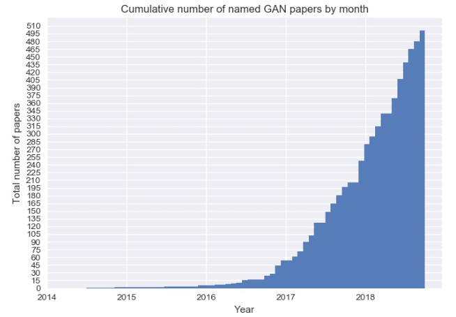
2018年，对抗式神经网络的思想被《麻省理工科技评论》评选为2018年“全球十大突破性技术”（10 Breakthrough Technologies）之一。 Yann LeCun（“深度学习三巨头”之一，纽约大学教授，前Facebook首席人工智能科学家）称赞生成对抗网络是“过去20年中深度学习领域最酷的思想”，而在国内被大家熟知的前百度首席科学家Andrew Ng也把生成对抗网络看作“深度学习领域中一项非常重大的进步”。
GAN由两个重要的部分构成：生成器(Generator，简写作G)和判别器(Discriminator，简写作D)。
这样，G和D构成了一个动态对抗（或博弈过程），随着训练（对抗）的进行，G生成的数据越来越接近真实数据，D鉴别数据的水平越来越高。在理想的状态下，G可以生成足以“以假乱真”的数据；而对于D来说，它难以判定生成器生成的数据究竟是不是真实的，因此D(G(z)) = 0.5。训练完成后，我们得到了一个生成模型G，它可以用来生成以假乱真的数据。
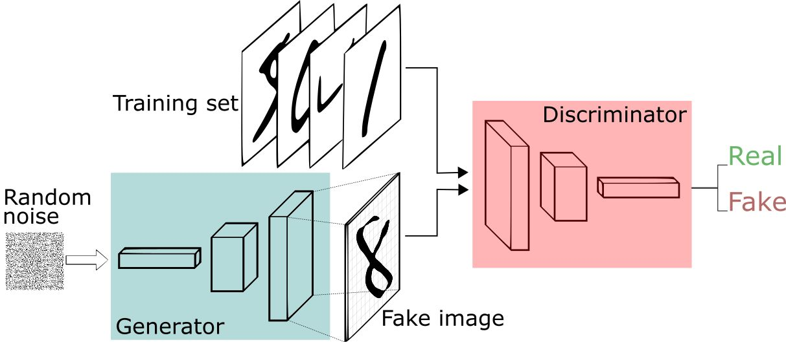
1）优点
2）缺点
人工智能的训练是需要大量的数据集，可以通过GAN自动生成低成本的数据集。
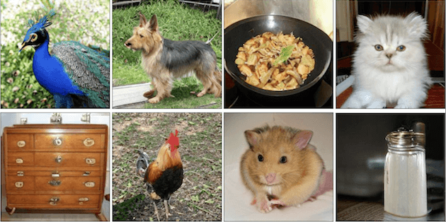
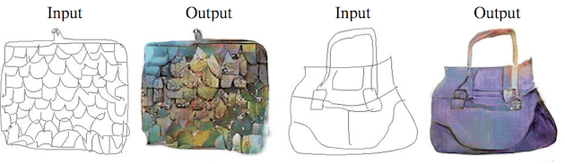
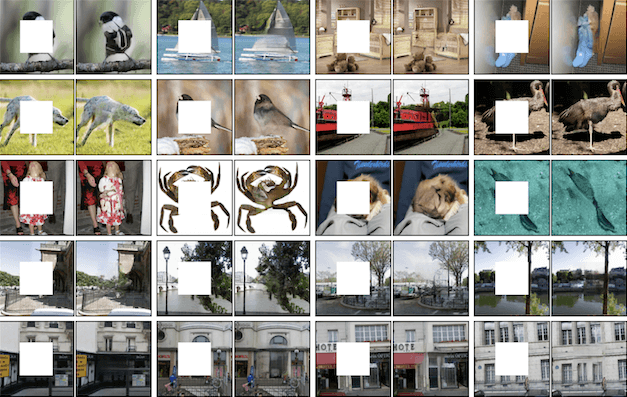
生成模型会从一个输入空间将数据映射到生成空间（即通过输入数据，在函数作用下生成输出数据），写成公式的形式是x=G（z）。通常，输入z会满足一个简单形式的随机分布（比如高斯分布或者均匀分布等），为了使得生成的数据分布能够尽可能地逼近真实数据分布，生成函数G会是一个神经网络的形式，通过神经网络可以模拟出各种完全不同的分布类型。
以下是生成对抗网络中的代价函数，以判别器D为例，代价函数写作，形式如下所示:
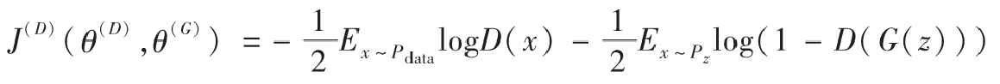
其中，E表示期望概率，表示x满足分布。
对于生成器来说它与判别器是紧密相关的，我们可以把两者看作一个零和博弈，它们的代价综合应该是零，所以生成器的代价函数应满足如下等式：
这样一来，我们可以设置一个价值函数V来表示和：
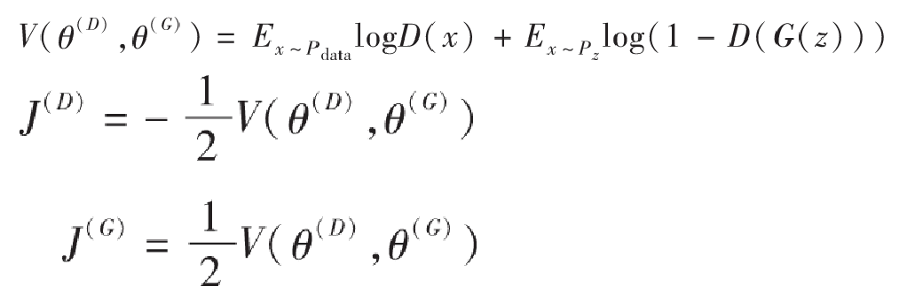
我们现在把问题变成了需要寻找一个合适的使得和都尽可能小，也就是说对于判别器而言越大越好，而对于生成器来说则是越小越好，从而形成了两者之间的博弈关系。
在博弈论中，博弈双方的决策组合会形成一个纳什平衡点（Nash equilibrium），在这个博弈平衡点下博弈中的任何一方将无法通过自身的行为而增加自己的收益。在生成对抗网络中，我们要计算的纳什平衡点正是要寻找一个生成器G与判别器D使得各自的代价函数最小，从上面的推导中也可以得出我们希望找到一个对于生成器来说最小而对判别器来说最大，我们可以把它定义成一个寻找极大极小值的问题，公式如下所示：
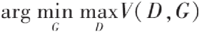
我们可以用图形化的方法理解一下这个极大极小值的概念，一个很好的例子就是鞍点（saddle point），如下图所示，即在一个方向是函数的极大值点，而在另一个方向是函数的极小值点。
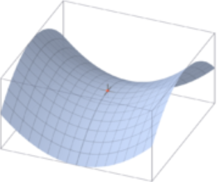
在上面公式的基础上，我们可以分别求出理想的判别器D*和生成器G*：
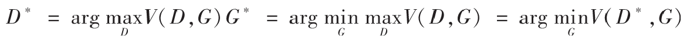
下面我们先来看一下如何求出理想的判别器，对于上述的D*，我们假定生成器G是固定的，令式子中的G（z）=x。推导如下：
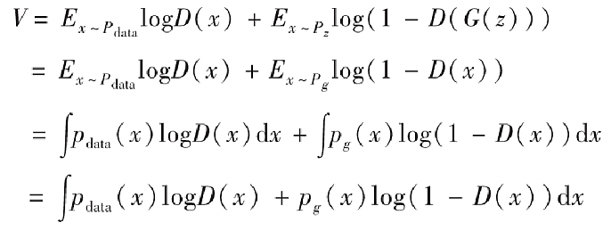
我们现在的目标是希望寻找一个D使得V最大，我们希望对于积分中的项，无论x取何值都能最大。其中，我们已知是固定的，之前我们也假定生成器G固定，所以也是固定的，所以我们可以很容易地求出D以使得f（x）最大。我们假设x固定，f（x）对D（x）求导等于零，下面是求解D（x）的推导。
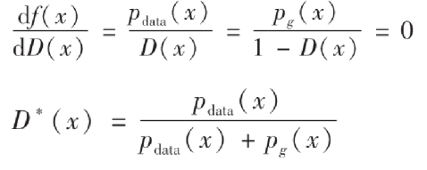
可以看出它是一个范围在0到1的值，这也符合我们判别器的模式，理想的判别器在接收到真实数据时应该判断为1，而对于生成数据则应该判断为0，当生成数据分布与真实数据分布非常接近的时候，应该输出的结果为1/2.
找到了D*之后，我们再来推导一下生成器G*。现在先把D*（x）代入前面的积分式子中重新表示：
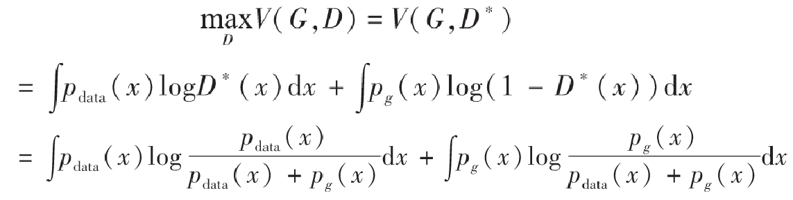
到了这一步，我们需要先介绍一个定义——Jensen–Shannon散度，我们这里简称JS散度。在概率统计中，JS散度也与前面提到的KL散度一样具备了测量两个概率分布相似程度的能力，它的计算方法基于KL散度，继承了KL散度的非负性等，但有一点重要的不同，JS散度具备了对称性。JS散度的公式如下，我们还是以P和Q作为例子，另外我们设定，KL为KL散度公式。
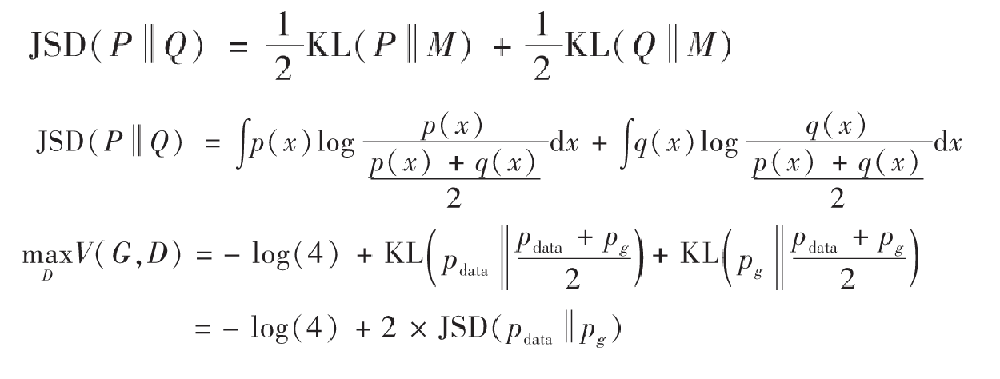
对于上面的，由于JS散度是非负的，当且仅当的时候，上式可以取得全局最小值。所以我们要求的最优生成器G*，正是要使得G*的分布.
下面我们用一个可视化概率分布的例子来更深入地认识一下生成对抗网络。Ian Goodfellow的论中给出了这样一个GAN的可视化实现的例子：下图中的点线为真实数据分布，曲线为生成数据样本，生成对抗网络在这个例子中的目标在于，让曲线（也就是生成数据的分布）逐渐逼近点线（代表的真实数据分布）。
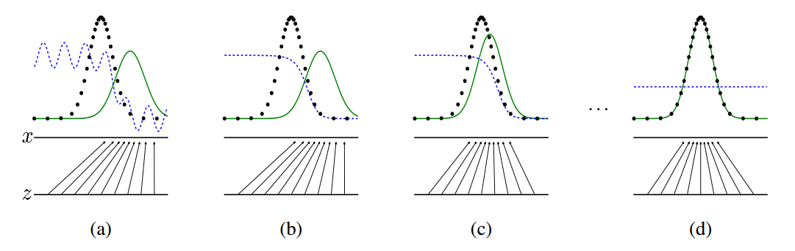
虚线为生成对抗网络中的判别器，它被赋予了初步区分真实数据与生成数据的能力，并对于它的划分性能加上一定的白噪声，使得模拟环境更为真实。输入域为z（图中下方的直线）在这个例子里默认为一个均匀分布的数据，生成域为x（图中上方的直线）为不均匀分布数据，通过生成函数x=G（z）形成一个映射关系，如图中的那些箭头所示，将均匀分布的数据映射成非均匀数据。
从a到d的四张图可以展现整个生成对抗网络的运作过程。在a图中，可以说是一种初始的状态，生成数据与真实数据还有比较大的差距，判别器具备初步划分是否为真实数据的能力，但是由于存在噪声，效果仍有缺陷。b图中，通过使用两类标签数据对于判别器的训练，判别器D开始逐渐向一个比较完善的方向收敛，最终呈现出图中的结果。当判别器逐渐完美后，我们开始迭代生成器G，如图c所示。通过判别器D的倒数梯度方向作为指导，我们让生成数据向真实数据的分布方向移动，让生成数据更容易被判别器判断为真实数据。在反复的一系列上述训练过程后，生成器与判别器会进入图d的最终状态，此时会非常逼近甚至完全等于，当达到理想的的时候，D与G都已经无法再更进一步优化了，此时G生成的数据已经达到了我们期望的目的，能够完全模拟出真实数据的分布，而D在这个状态下已经无法分辨两种数据分布（因为它们完全相同），此时.
DCGAN的创始论文《Unsupervised Representation Learning with Deep Convolutional Generative Adversarial Networks》（基于深层卷积生成对抗网络的无监督表示学习）发表于2015年，文章在GAN的基础之上提出了全新的DCGAN架构，该网络在训练过程中状态稳定，并可以有效实现高质量的图片生成及相关的生成模型应用。由于其具有非常强的实用性，在它之后的大量GAN模型都是基于DCGAN进行的改良版本。为了使得GAN能够很好地适应于卷积神经网络架构，DCGAN提出了四点架构设计规则，分别是：
下图是DCGAN生成器G的架构图，输入数据为100维的随机数据z，服从范围在[-1，1]的均匀分布，经过一系列分数步长卷积后，最后形成一幅64×64×3的RGB图片，与训练图片大小一致。
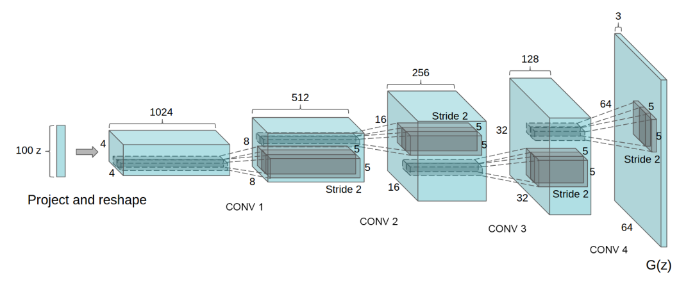
对于判别器D的架构，基本是生成器G的反向操作，如下图所示。输入层为64×64×3的图像数据，经过一系列卷积层降低数据的维度，最终输出的是一个二分类数据。
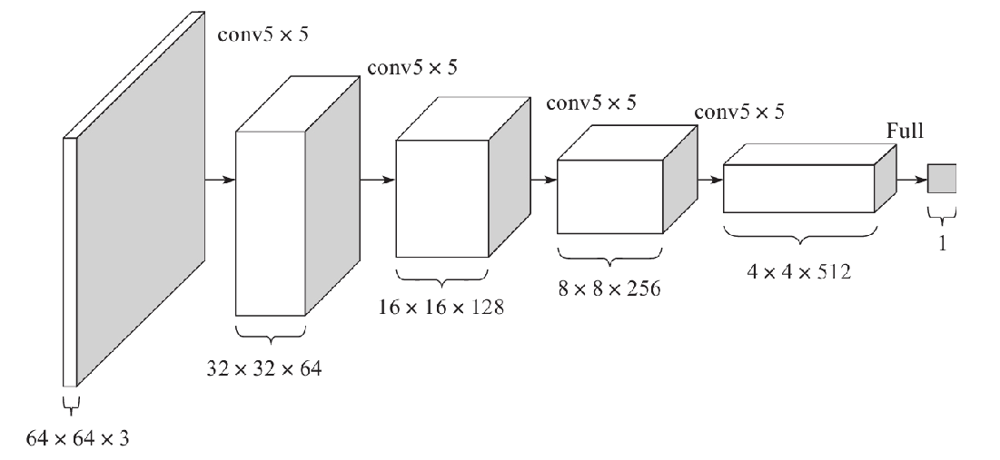
1）对于用于训练的图像数据样本，仅将数据缩放到[-1，1]的范围内，这个也是tanh的取值范围，并不做任何其他处理。
2）模型均采用Mini-Batch大小为128的批量随机梯度下降方法进行训练。权重的初始化使用满足均值为0、方差为0.02的高斯分布的随机变量。
3）对于激活函数LeakyReLU，其中Leak的部分设置斜率为0.2。
4）训练过程中使用Adam优化器进行超参数调优。学习率使用0.0002，动量β1取0.5，使得训练更加稳定。
实现DCGAN，并利用其合成卡通人物头像。
样本内容：卡通人物头像
样本数量：51223个
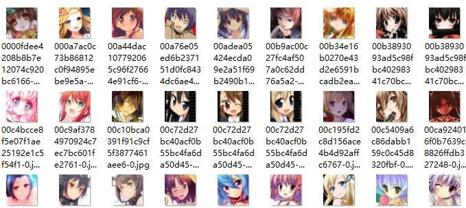
1）avatar.py
x1import os2import scipy.misc3import numpy as np4from glob import glob567# Avatar(化身)类8class Avatar:910 def __init__(self):11 self.data_name = 'faces'12 self.source_shape = (96, 96, 3)13 self.resize_shape = (48, 48, 3)14 self.crop = True # 裁剪15 self.img_shape = self.source_shape if not self.crop else self.resize_shape # 图片形状16 self.img_list = self._get_img_list() # 加载所有图片17 self.batch_size = 64 # batch_size大小18 self.batch_shape = (self.batch_size,) + self.img_shape19 self.chunk_size = len(self.img_list) // self.batch_size # 总批次数量 = 样本数 / 批次大小2021 def _get_img_list(self):22 """23 加载所有图片样本路径24 :return:所有图片样本路径列表25 """26 path = os.path.join(os.getcwd(), self.data_name, '*.jpg')27 return glob(path)2829 def _get_img(self, name):30 """31 读取图像数据32 :param name: 图片路径33 :return: 图像数据34 """35 assert name in self.img_list36 img = scipy.misc.imread(name).astype(np.float32) # 读取图像37 assert img.shape == self.source_shape38 return self._resize(img) if self.crop else img # 调整大小并返回3940 def _resize(self, img):41 h, w = img.shape[:2]42 resize_h, resize_w = self.resize_shape[:2]43 crop_h, crop_w = self.source_shape[:2]44 j = int(round((h - crop_h) / 2.))45 i = int(round((w - crop_w) / 2.))46 cropped_image = scipy.misc.imresize(img[j:j + crop_h, i:i + crop_w], [resize_h, resize_w])47 return np.array(cropped_image) / 127.5 - 1.4849 50 def save_img(image, path):51 scipy.misc.imsave(path, image)52 return True5354 def batches(self):55 start = 056 end = self.batch_size5758 for _ in range(self.chunk_size):59 name_list = self.img_list[start:end]60 imgs = [self._get_img(name) for name in name_list]61 batches = np.zeros(self.batch_shape)62 batches[::] = imgs63 yield batches64 start += self.batch_size65 end += self.batch_size666768if __name__ == '__main__':69 avatar = Avatar()70 batch = avatar.batches()71 b = next(batch)72 for num in range(len(b)):73 avatar.save_img(b[num], 'samples' + os.sep + str(num) + '.jpg')2）avatar_model.py
xxxxxxxxxx3761# DCGAN2# Date: 2020/04/303# Author: wdb45import os6import math7import numpy as np8import tensorflow as tf9from datetime import datetime10# from avatarDcgan.avatar import Avatar11from avatar import Avatar # wdb 20200325121314class AvatarModel:15 def __init__(self):16 self.avatar = Avatar()1718 # 真实图片shape (height, width, depth)19 self.img_shape = self.avatar.img_shape # (48,48,3)20 # 一个batch图片shape (batch, height, width, depth)21 self.batch_shape = self.avatar.batch_shape22 # 一个batch包含的图片数量23 self.batch_size = self.avatar.batch_size24 # batch数量25 self.chunk_size = self.avatar.chunk_size2627 self.noise_img_size = 100 # 白噪声图片大小28 self.gf_size = 64 # 卷积转置通道数量29 self.df_size = 64 # 卷积输出通道数量30 self.epoch_size = 1 # 训练循环次数31 self.learning_rate = 0.0002 # 学习率32 self.beta1 = 0.5 # 优化指数衰减率33 self.sample_size = 64 # 生成图像数量(和avatar类中batch_size数量要一致, 不然生成图像报错)3435 36 def conv_out_size_same(size, stride):37 """38 计算每层高度、宽度39 :param size:40 :param stride:41 :return:42 """43 return int(math.ceil(float(size) / float(stride)))4445 46 def linear(images, output_size, stddev=0.02, bias_start=0.0, name="Linear"):47 """48 计算线性模型 wx + b49 :param images: 输入数据 (x)50 :param output_size: 输出值大小51 :param stddev: 创建正态分布张量的标准差52 :param bias_start: 偏置初始值53 :param name: 变量作用域名称54 :return: 返回计算结果及参数55 """56 shape = images.get_shape().as_list() # 取出输入数据形状并转换为列表5758 with tf.variable_scope(name):59 w = tf.get_variable("w", # 名称60 [shape[1], output_size], # 矩阵行、列61 tf.float32, # 类型62 tf.random_normal_initializer(stddev=stddev)) # 初始值63 b = tf.get_variable("b", # 名称64 [output_size], # 个数等于列数65 initializer=tf.constant_initializer(bias_start)) # 初始值6667 return tf.matmul(images, w) + b, w, b6869 70 def batch_normailizer(x, epsilon=1e-5, momentum=0.9, train=True, name="batch_norm"):71 """72 批量归一化73 :param x: 输入74 :param epsilon: 给一个很小的值，避免除数为0的情况75 :param momentum: 衰减系数, 推荐使用0.976 :param train: 图否处于训练模式77 :param name: 变量作用域名称78 :return:79 """80 with tf.variable_scope(name):81 return tf.contrib.layers.batch_norm(x, # 输入82 decay=momentum, # 衰减系数, 推荐使用0.983 updates_collections=None,84 epsilon=epsilon, # 避免被零除85 scale=True, # 是否缩放86 is_training=train) # 图否处于训练模式8788 89 def conv2d(images, output_dim, stddev=0.02, name="conv2d"):90 """91 二维卷积92 :param images: 图像数据93 :param output_dim: 输出数据大小94 :param stddev: 创建正态分布张量的标准差95 :param name: 变量作用域名称96 :return:97 """98 with tf.variable_scope(name):99 # filter: [height, width, in_channels, output_channels]100 filter_shape = [5, 5, images.get_shape()[-1], output_dim]101 strides_shape = [1, 2, 2, 1] # 步长102103 w = tf.get_variable("w", # 名称104 filter_shape,105 initializer=tf.random_normal_initializer(stddev=stddev)) # 初始值106 b = tf.get_variable("b", # 名称107 [output_dim], # 偏置数量108 initializer=tf.constant_initializer(0.0)) # 初始值109 conv = tf.nn.conv2d(images, w, strides=strides_shape, padding="SAME") # 卷积运算110 conv = tf.reshape(tf.nn.bias_add(conv, b), conv.get_shape())111112 return conv113114 115 def deconv2d(images, output_shape, stddev=0.02, name="deconv2d"):116 """117 反向卷积(也称为转置卷积)118 :param images: 图像数据119 :param output_dim: 输出数据大小120 :param stddev: 创建正态分布张量的标准差121 :param name: 变量作用域名称122 :return:123 """124 with tf.variable_scope(name):125 # 卷积核形状126 filter_shape = [5, 5, output_shape[-1], images.get_shape()[-1]]127 strides_shape = [1, 2, 2, 1] # 步长128129 w = tf.get_variable("w", # 名称130 filter_shape,131 initializer=tf.random_normal_initializer(stddev=stddev)) # 初始值132 b = tf.get_variable("biases", # 名称133 [output_shape[-1]], # 偏置数量134 initializer=tf.constant_initializer(0.0)) # 初始值135 deconv = tf.nn.conv2d_transpose(images,136 w,137 output_shape=output_shape,138 strides=strides_shape)139 deconv = tf.nn.bias_add(deconv, b)140141 return deconv, w, b142143 144 def lrelu(x, leak=0.2):145 return tf.maximum(x, leak * x)146147 def generator(self, noise_imgs, train=True):148 """149 生成器150 :param noise_imgs: 输入(白噪声)151 :param train: 是否为训练模式152 :return:153 """154 with tf.variable_scope("generator"):155 # 计算每一层的高、宽156 s_h, s_w, _ = self.img_shape # 48*48*3157 s_h2, s_w2 = self.conv_out_size_same(s_h, 2), self.conv_out_size_same(s_w, 2) # 24,24158 s_h4, s_w4 = self.conv_out_size_same(s_h2, 2), self.conv_out_size_same(s_w2, 2) # 12,12159 s_h8, s_w8 = self.conv_out_size_same(s_h4, 2), self.conv_out_size_same(s_w4, 2) # 6,6160 s_h16, s_w16 = self.conv_out_size_same(s_h8, 2), self.conv_out_size_same(s_w8, 2) # 3,3161162 # layer 0: 输入层163 # 对输入噪音图片进行线性变换164 z, h0_w, h0_b = self.linear(noise_imgs,165 self.gf_size * 8 * s_h16 * s_w16) # 64*8*3*3=4608166 # reshape为合适的输入层格式167 h0 = tf.reshape(z, [-1, s_h16, s_w16, self.gf_size * 8]) # [-1, 3, 3, 512]168 # 批量归一化, 加快收敛速度169 h0 = self.batch_normailizer(h0, train=train, name="g_bn0")170 h0 = tf.nn.relu(h0) # 激活171172 # layer 1: 反卷积进行上采样(对图像填充数据进行放大)173 h1, h1_w, h1_b = self.deconv2d(h0,174 [self.batch_size, s_h8, s_w8, self.gf_size * 4], # [32,6,6,256]175 name="g_h1")176 h1 = self.batch_normailizer(h1, train=train, name="g_bn1")177 h1 = tf.nn.relu(h1)178179 # layer 2: 反卷积180 h2, h2_w, h2_b = self.deconv2d(h1,181 [self.batch_size, s_h4, s_w4, self.gf_size * 2], # [32,12,12,128]182 name="g_h2")183 h2 = self.batch_normailizer(h2, train=train, name="g_bn2")184 h2 = tf.nn.relu(h2)185186 # layer 3: 反卷积187 h3, h3_w, h3_b = self.deconv2d(h2,188 [self.batch_size, s_h2, s_w2, self.gf_size * 1], # [32,24,24,64]189 name="g_h3")190 h3 = tf.nn.relu(h3)191192 # layer 4: 反卷积193 h4, h4_w, h4_b = self.deconv2d(h3, self.batch_shape, name="g_h4") # [32,48,48]194195 return tf.nn.tanh(h4) # 激活函数计算并返回196197 def discriminator(self, real_imgs, reuse=False):198 """199 判别器200 :param real_imgs: 图像数据201 :param reuse: 是否重用名字空间202 :return:203 """204 with tf.variable_scope("discriminator", reuse=reuse):205 # layer 0: 卷积206 h0 = self.conv2d(real_imgs, self.df_size, name="d_h0_conv")207 h0 = self.lrelu(h0) # 激活208209 # layer 1210 h1 = self.conv2d(h0, self.df_size * 2, name="d_h1_conv")211 h1 = self.batch_normailizer(h1, name="d_bn1") # 批量归一化212 h1 = self.lrelu(h1) # 激活213214 # layer 2215 h2 = self.conv2d(h1, self.df_size * 4, name="d_h2_conv")216 h2 = self.batch_normailizer(h2, name="d_bn2") # 批量归一化217 h2 = self.lrelu(h2) # 激活218219 # layer 3220 h3 = self.conv2d(h2, self.df_size * 8, name="d_h3_conv")221 h3 = self.batch_normailizer(h3, name="d_bn3") # 批量归一化222 h3 = self.lrelu(h3) # 激活223224 # layer 4225 h4, _, _ = self.linear(tf.reshape(h3, [self.batch_size, -1]),226 1,227 name="d_h4_lin")228229 return tf.nn.sigmoid(h4), h4230231 232 def loss_graph(real_logits, fake_logits):233 # 生成器loss234 # 生成器希望判别器判断出来标签为1235 gen_loss = tf.reduce_mean(tf.nn.sigmoid_cross_entropy_with_logits(logits=fake_logits,236 labels=tf.ones_like(fake_logits)))237 # 判别器识别生成的图片loss238 # 判别器希望识别出来的标签为0239 fake_loss = tf.reduce_mean(tf.nn.sigmoid_cross_entropy_with_logits(logits=fake_logits,240 labels=tf.zeros_like(fake_logits)))241 # 判别器识别真实图片loss242 # 判别器希望识别出来标签全为1243 real_loss = tf.reduce_mean(tf.nn.sigmoid_cross_entropy_with_logits(logits=real_logits,244 labels=tf.ones_like(real_logits)))245 # 判别器总的loss246 # 对真实图片和生成图片总体判别结果247 dis_loss = tf.add(fake_loss, real_loss)248249 return gen_loss, fake_loss, real_loss, dis_loss250251 252 def optimizer_graph(gen_loss, dis_loss, learning_rate, beta1):253 """254 定义优化器255 :param gen_loss: 生成器损失函数256 :param dis_loss: 判别器损失函数257 :param learning_rate: 学习率258 :param beta1: 衰减率259 :return:260 """261 train_vars = tf.trainable_variables()262 # 生成器变量263 gen_vars = [var for var in train_vars if var.name.startswith("generator")]264 # 判别器变量265 dis_vars = [var for var in train_vars if var.name.startswith("discriminator")]266267 # 优化器268 # beta1: 衰减率269 # var_list: 优化的变量270 gen_optimizer = tf.train.AdamOptimizer(learning_rate=learning_rate,271 beta1=beta1).minimize(gen_loss, var_list=gen_vars)272 dis_optimizer = tf.train.AdamOptimizer(learning_rate=learning_rate,273 beta1=beta1).minimize(dis_loss, var_list=dis_vars)274275 return gen_optimizer, dis_optimizer276277 def train(self):278 """279 训练280 :return:281 """282 # 真实图像283 real_imgs = tf.placeholder(tf.float32, self.batch_shape, name="real_images")284 # 白噪声图像285 noise_imgs = tf.placeholder(tf.float32, [None, self.noise_img_size], name="noise_images")286287 # 生成图像288 fake_imgs = self.generator(noise_imgs)289290 # 判别291 ## 对真实图像进行判别292 real_outputs, real_logits = self.discriminator(real_imgs)293 ## 对生成器生成的图像进行判别294 fake_outputs, fake_logits = self.discriminator(fake_imgs, reuse=True)295296 # 获取损失函数297 gen_loss, fake_loss, real_loss, dis_loss = self.loss_graph(real_logits, fake_logits)298299 # 优化器300 gen_optimizer, dis_optimizer = self.optimizer_graph(gen_loss, # 生成器损失函数301 dis_loss, # 判别器损失函数302 self.learning_rate, # 学习率303 self.beta1) # 衰减率304 # 开始训练305 saver = tf.train.Saver()306 step = 0307 # 限定占用GPU比率308 gpu_options = tf.GPUOptions(per_process_gpu_memory_fraction=0.8)309310 # 创建Session，执行训练311 # 创建Session时通过config来设置参数312 with tf.Session(config=tf.ConfigProto(gpu_options=gpu_options)) as sess:313 sess.run(tf.global_variables_initializer()) # 初始化314315 # 训练之前，加载增量模型316 if os.path.exists("./model/checkpoint"):317 print("saver restore:", os.getcwd())318 # 获取最后一个检查点文件并加载319 saver.restore(sess, tf.train.latest_checkpoint("./model/"))320321 for epoch in range(self.epoch_size):322 batches = self.avatar.batches() # 取出一个批次数据323324 for batch_imgs in batches:325 # 产生一个批次的均匀分布的白噪声数据326 noises = np.random.uniform(-1, 1,327 size=(self.batch_size, self.noise_img_size)).astype(np.float32)328329 _ = sess.run(dis_optimizer, feed_dict={real_imgs: batch_imgs, noise_imgs: noises})330 _ = sess.run(gen_optimizer, feed_dict={noise_imgs: noises})331 _ = sess.run(gen_optimizer, feed_dict={noise_imgs: noises})332333 step += 1334 print(datetime.now().strftime("%c"), epoch, step)335336 # 每一轮训练结束计算loss337 ## 总判别器loss338 loss_dis = sess.run(dis_loss, feed_dict={real_imgs: batch_imgs, noise_imgs: noises})339 ## 判别器对真实图片loss340 loss_real = sess.run(real_loss, feed_dict={real_imgs: batch_imgs, noise_imgs: noises})341 ## 判别器对生成的图片loss342 loss_fake = sess.run(fake_loss, feed_dict={real_imgs: batch_imgs, noise_imgs: noises})343 ## 生成器loss344 loss_gen = sess.run(gen_loss, feed_dict={noise_imgs: noises})345346 print("")347 print(datetime.now().strftime('%c'), ' epoch:', epoch, ' step:', step, ' loss_dis:', loss_dis,348 ' loss_real:', loss_real, ' loss_fake:', loss_fake, ' loss_gen:', loss_gen)349350 # 训练结束保存模型351 model_path = "./model/" + "avatar.model"352 saver.save(sess, model_path, global_step=step)353354 def gen(self):355 """356 生成图像357 :return:358 """359 noise_imgs = tf.placeholder(tf.float32, [None, self.noise_img_size],360 name="noise_imgs") # 白噪声361 sample_imgs = self.generator(noise_imgs, train=False) # 生成362 saver = tf.train.Saver()363364 with tf.Session() as sess:365 sess.run(tf.global_variables_initializer())366367 saver.restore(sess, tf.train.latest_checkpoint("./model/")) # 加载模型368 # 生成白噪声369 sample_noise = np.random.uniform(-1, 1,370 size=(self.sample_size, self.noise_img_size))371 # 执行生成图像操作372 samples = sess.run(sample_imgs, feed_dict={noise_imgs: sample_noise})373374 # 爆存生成的图像375 for num in range(len(samples)):376 self.avatar.save_img(samples[num], "samples" + os.sep + str(num) + ".jpg")3）avatar_train.py
xxxxxxxxxx51from avatar_model import AvatarModel # wdb 2020032523if __name__ == '__main__':4 avatar = AvatarModel()5 avatar.train()4）avatar_gen.py
xxxxxxxxxx61from avatar_model import AvatarModel # wdb 2020032523if __name__ == '__main__':4 avatar = AvatarModel()5 avatar.gen()6 print("图片生成完成.")为了加快训练速度，实际只采用了8903个样本进行训练，执行每20轮一次增量训练。实验结果如下：
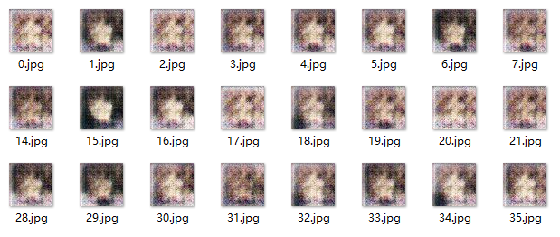
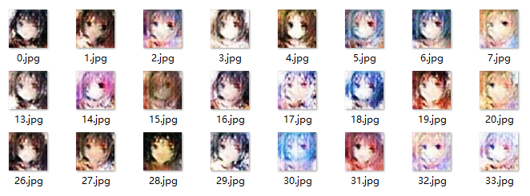
1）文本生成图像：GAWWN
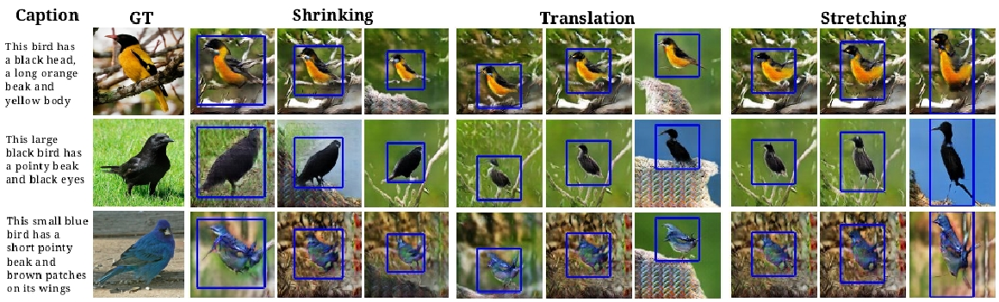
2）匹配数据图像转换：Pix2Pix
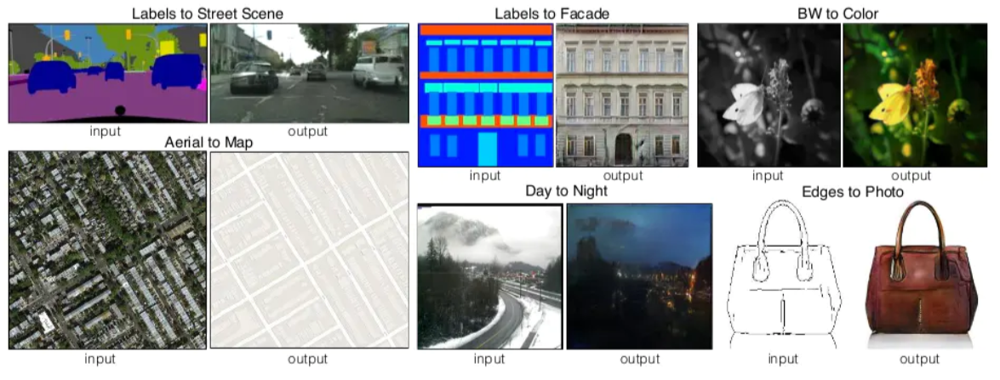
3）非匹配数据图像转换：CycleGAN，用于实现两个领域图片互转
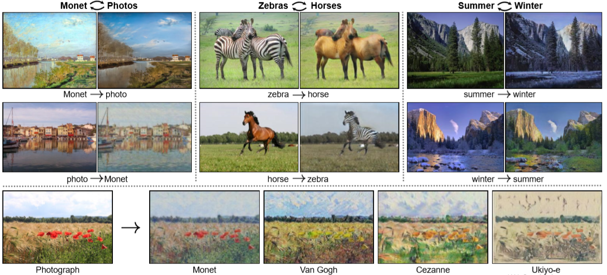
4）多领域图像转换：StarGAN
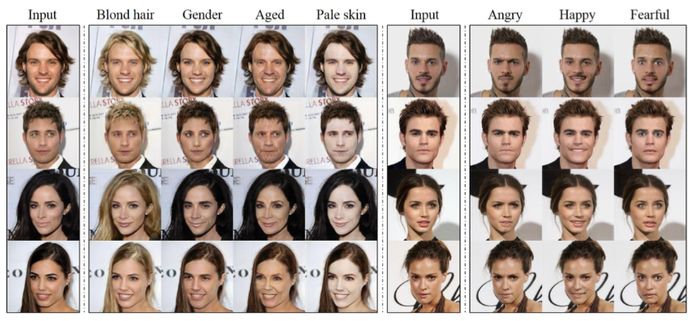
1）李宏毅GAN教程：https://www.ixigua.com/pseries/6783110584444387843/?logTag=cZwYY0OhI8vRiNppza2UW
1）《生成对抗网络入门指南》，史丹青编著，机械工业出版社